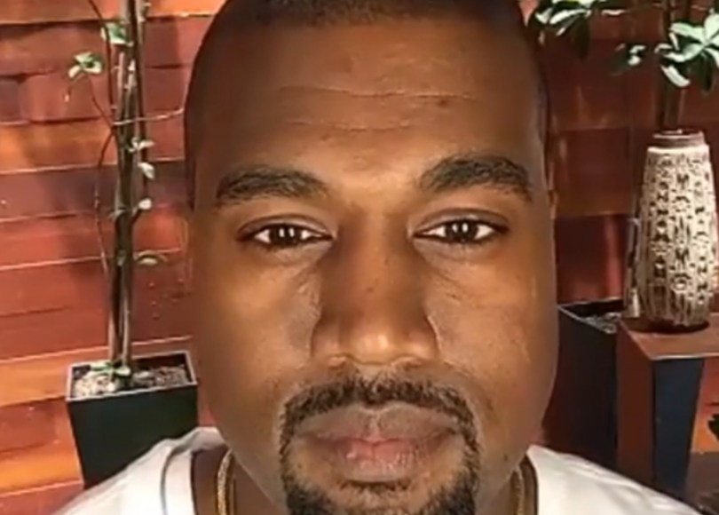

Shrek 2
Dirección
Andrew Adamson
Kelly Asbury
Conrad Vernon
Producción
Aron Warner
David Lipman
John H. Williams
Jeffrey Katzenberg
Protagonistas
Mike Myers
Cameron Diaz
Eddie Murphy
Antonio Banderas
Julie Andrews
John Cleese
Rupert Everett
Jennifer Saunders
Larry King
MIRA SHREK 2
kanye te juzga

por no verte SHREK 2
BENEFICIOS DE VER SHREK 2
Mejor salud
Felicidad Incrementada
Immediatamente más atractiv@
No te parto las piernas :)